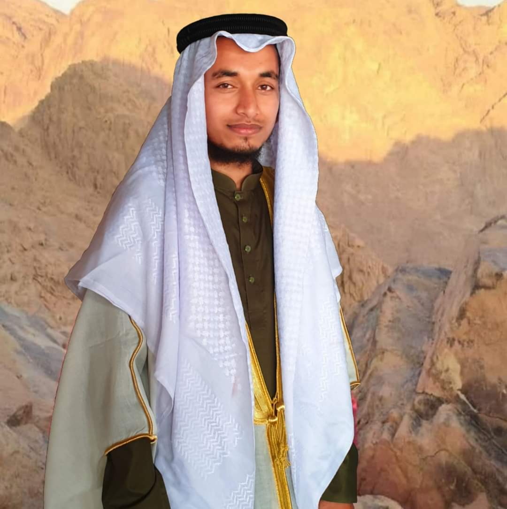

আল-হাদিস এন্ড ইসলামিক স্টাডিজ, ইসলামী বিশ্ববিদ্যালয়, কুষ্টিয়া ।

আব্দুল্লাহ আল মাসুদ সাতক্ষীরা জেলার সদর থানার ভালুকা চাঁদপুর গ্রামে একটি সম্ভ্রান্ত ইসলামিক পরিবারে জন্মগ্রহণ করেন। তিনি ভালুকা চাঁদপুর দাখিল মাদরাসা থেকে দাখিল (SSC) এবং খুলনা দারুল কোরআন সিদ্দিকিয়া কামিল মাদরাসা থেকে আলিম (HSC) পাস করেন। বর্তমানে ইসলামী বিশ্ববিদ্যালয়, কুষ্টিয়ায় আল-হাদিস এন্ড ইসলামিক স্টাডিজ বিভাগে ৪র্থ বর্ষে অধ্যায়নরত। পাশাপাশি তিনি একজন দায়ী হিসেবে অঞ্চলভিত্তিক দাওয়াহ কাজ করে যাচ্ছেন।
| নাম | আব্দুল্লাহ আল মাসুদ |
|---|---|
| পিতা | আব্দুল মাজেদ |
| মাতা | মাহমুদা খাতুন (ইন্তেকাল করেছেন ১৪ ডিসেম্বর ২০২৪) |
| জন্ম | ৩০ জুন ২০০৩ (NID অনুযায়ী) |
| উচ্চতা/ওজন | ৫'৬"/৭" | ৬০/৬১ কেজি |
| রক্তের গ্রুপ | O+ |
| জাতীয়তা | বাংলাদেশী |
| স্থায়ী ঠিকানা | ভালুকা চাঁদপুর, সাতক্ষীরা সদর, সাতক্ষীরা |
|---|---|
| বর্তমান ঠিকানা | ইসলামী বিশ্ববিদ্যালয়, কুষ্টিয়া |
| বেড়ে উঠা | গ্রাম ও প্রতিষ্ঠান এলাকায় |
| পরীক্ষা | প্রতিষ্ঠান | ফলাফল/বছর |
|---|---|---|
| জেডিসি (JSC) | ভালুকা চাঁদপুর দাখিল মাদরাসা | GPA: 5.00 (২০১৬) |
| দাখিল (SSC) | ভালুকা চাঁদপুর দাখিল মাদরাসা | GPA: 4.69 (২০১৯) |
| আলিম (HSC) | দারুল কোরআন সিদ্দিকিয়া কামিল মাদরাসা, খুলনা | GPA: 4.86 (২০২১) |
| স্নাতক (অনার্স) |
ইসলামী বিশ্ববিদ্যালয়, কুষ্টিয়া (আল-হাদিস এন্ড ইসলামিক স্টাডিজ) |
CGPA: 3.84 (৪র্থ বর্ষ চলমান) |
| ফাজিল (ডিগ্রি) | পাটকেলঘাটা আল-আমিন ফাজিল মাদরাসা | GPA: 4.33 |
| কামিল (মাস্টার্স) | কুওয়াতুল ইসলাম কামিল মাদ্রাসা, কুষ্টিয়া | চলমান |
পিতা: আব্দুল মাজেদ
পেশা: শিক্ষক (ভালুকা চাঁদপুর দাখিল মাদরাসা) ও ব্যবসায়ী (ফার্মেসি)
ভাইবোন:
• বোন (সবার বড়): কামিল (মাস্টার্স), বিবাহিত, ভগ্নিপতি প্রিন্সিপাল, পাটকেলঘাটা আল-আমিন ফাজিল মাদরাসা।
• ১ম ভাই: সেকেন্ড ইঞ্জিনিয়ার (মেরিন)
• ২য় ভাই: আব্দুল্লাহ আল মাসুদ (নিজে)
• ৩য় ভাই: শিক্ষার্থী (মার্কেটিং), রাজশাহী বিশ্ববিদ্যালয়
• ৪র্থ ভাই: শিক্ষার্থী (আল-হাদিস এন্ড ইসলামিক স্টাডিজ, ইসলামী বিশ্ববিদ্যালয়, কুষ্টিয়া)
চাচা ৪ জন: ১ম - হাইস্কুল শিক্ষক (অবঃ) | ২য় - মৃত | ৩য় - আমার পিতা | ৪র্থ - ব্যবসায়ী ও মুয়াজ্জিন
মামা ৪ জন: ১ম - ভাইস প্রিন্সিপাল (অবঃ) | ২য় - কৃষক | ৩য় - সুপার | ৪র্থ - হাফেজ ও শিক্ষক (ই.ফা.)
পারিবারিক অবস্থা: মধ্যবিত্ত, দ্বীনি পরিবেশ ও জ্ঞান চর্চার ধারা বজায় রাখে। বড় বোনের স্বামী একজন মাদ্রাসা শিক্ষাবিদ।
পরিবারের সবার আন্তরিক দোয়া ও সহযোগিতায় এগিয়ে চলছি।
ইসলামের চিরন্তন ও কল্যাণময় বার্তা মানুষের দ্বারে দ্বারে পৌঁছে দেওয়া এবং আল্লাহর জমিনে তাঁর দীন প্রতিষ্ঠার মহান লক্ষ্যে নিজেকে উৎসর্গ করা। বর্তমানে দায়িত্ব পালনের মাধ্যমে সমাজ সংস্কার ও সঠিক ধর্মীয় জ্ঞান প্রচারে সচেষ্ট।
বাংলা (মাতৃভাষা), আরবি (একাডেমিক ও দাওয়াহ স্তর), ইংরেজি ( মাধ্যমিক ), তুর্কি ভাষার প্রতি আগ্রহ ।
ওজন ৬০/৬১ কেজি, উচ্চতা ৫'৬", রক্তের গ্রুপ O+ ।
ছোটবেলা থেকেই আম্মার আঁচলের ছায়ায় তিলে তিলে গড়ে উঠেছে আমার ইসলামী জীবনের ভিত। তাঁর স্নেহ-মমতার পরশে আমি অভ্যস্ত হয়ে উঠি দ্বীনের প্রতিটি শাখা-উপশাখার সাথে। আর ষষ্ঠ শ্রেণীতে পড়ার সময় প্রিয় নানার পরামর্শে ভর্তি হই হিফজ বিভাগে; সেখান থেকেই সম্পূর্ণ কুরআন মুখস্থ করে শেষ করি। আমার জীবনে দ্বীনকে পরিপূর্ণভাবে বরণ করে নেওয়ার বীজ বপন হয়েছিল এখানেই। এরপর ধীরে ধীরে ইসলামিক বই পড়া ও লেকচার শোনার মধ্য দিয়ে জ্ঞানের পরিধি বাড়তে থাকে। বিশেষ করে ডা. জাকির নায়েক ও ডা. আবদুল্লাহ জাহাঙ্গীর রহি. ও আব্দুল্লাহ বিন আব্দুর রাজ্জাকের বক্তব্য আমাকে গভীরভাবে প্রভাবিত করে। তাঁদের আলোচনা আমাকে দ্বীনের পথে আরও সুদৃঢ় করে তোলে। পাশাপাশি আমার পারিবারিক পরিবেশ—বিশেষ করে মামার বাড়ির অত্যন্ত ইসলামী চেতনাপূর্ণ আবহ—ছোটবেলা থেকেই আমাদের দ্বীনচর্চাকে সহজ ও স্বাভাবিক করে তুলেছিল। আলহামদুলিল্লাহ, প্রতিটি দিনই আমি দ্বীনের দিকে আরও একধাপ এগিয়ে যাওয়ার চেষ্টা করি।
“নিশ্চয় আমার সালাত, আমার কুরবানী, আমার জীবন ও আমার মৃত্যু আল্লাহর জন্য” — আল-আন‘আম ১৬২
“যে নারী শুধুমাত্র আল্লাহর সন্তুষ্টির জন্য জীবন যাপন করবে এবং খাদিজা (রা.)-এর মতো দ্বীন প্রতিষ্ঠায় আমার পাশে দাঁড়াবে।”
ইমেইল: almasud007745@gmail.com
WhatsApp/Phone: 01782830748